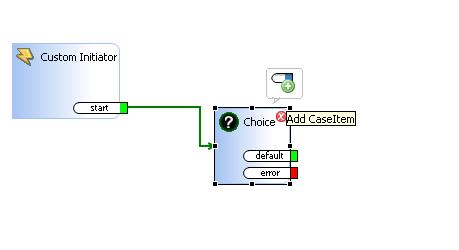
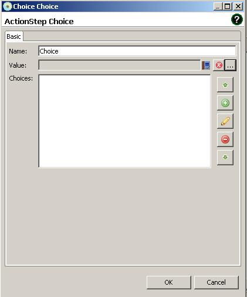
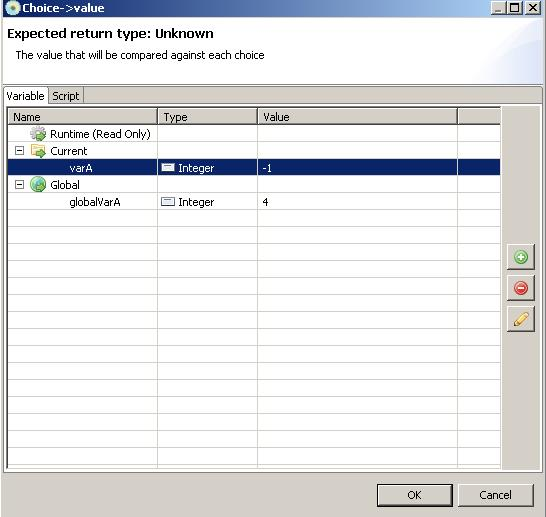
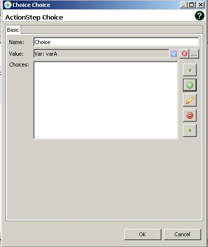
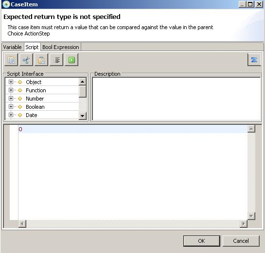
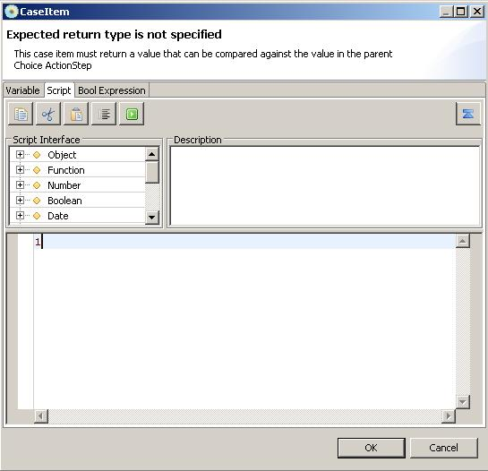
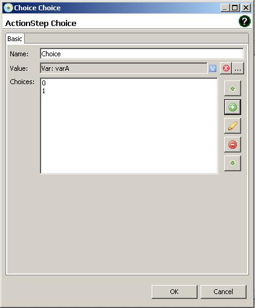
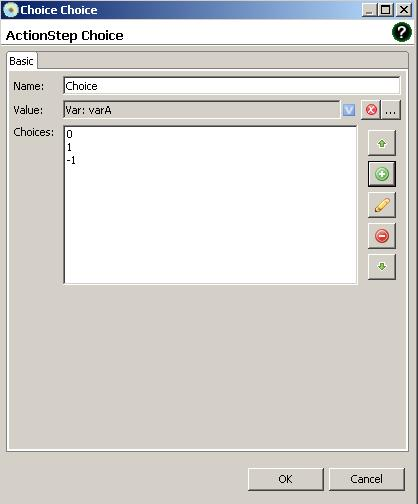
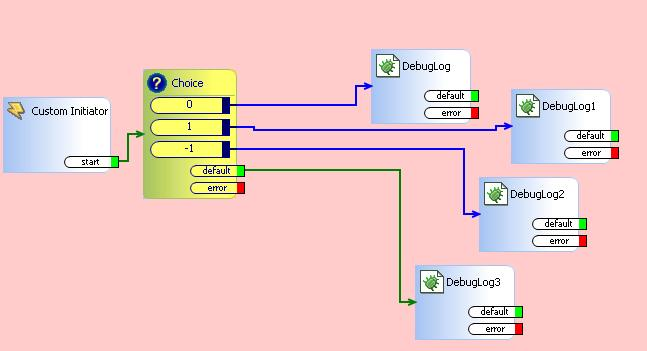
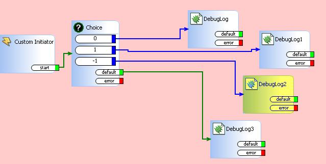

Choice
There exist cases which requires to evaluate multiple conditions. In
this case, ifthen actionstep can be still used but it could be tedious
to build structure.
Choice actionstep can simplify compliicated conditional structrues to a
single actionstep. We will start by creating current variable varA with
default value -1.
add choice actionstep into saflet.

Double clicking choice actionstep will bring up actionstep dialog.

We will evaluate varA value.

We select varA value to be evaluated with given choices. Now by
clicking + sign button, we can add value to compare with varA.

Select Script tab and write down 0.

Once it is added, add 1 for another choice.
\
It should show 0,1 to be value to compare with varA.

add -1 to choice value. This should be same value with varA and
evaluate as true condition.
Saflet should take this action path in execution.

So, we have 3 values to compare with value of varA.


Add some debuglog actionsteps. By debugging, we can verify
whether it is taking correct action path.

After execution of choice action step, saflet is taking -1 as saflet
execution path which is correct action path.

Choice action step can also accept boolean expression by using
boolean expression editor.
When expression will evaluate as true condition., saflet will take true
condition action path.